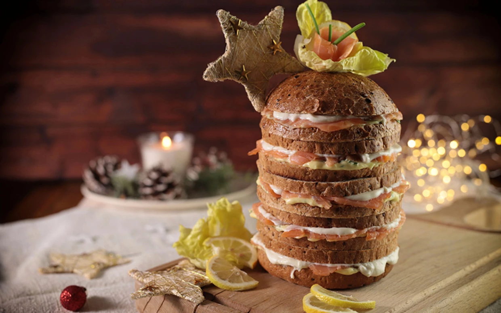

O Panetone é um pão alto e parecido com um bolo. Existem várias histórias possíveis de como o panetone surgiu, mas não importa se ele foi inventado por um vendedor ambulante, uma freira ou uma cozinheira da corte, sempre vale a pena reservar um tempo para prepará-lo! Esta receita de panetone gourmet salgado, em vez de doce, é uma ótima entrada para uma refeição de Natal.
Ingredientes
Para a massa inicial:
- 150 g (1 xícara) de farinha de manitoba
- 100 g (½ xícara) de leite integral
- 2 g (½ colher de chá) de levedura de cerveja
Para massa:
- 400 g (3 xícaras) de farinha de trigo tipo 0
- 120 g (½ xícara) de leite integral
- 80 g (4 colheres de sopa) de manteiga em temperatura ambiente
- 40 g (3 colheres de sopa) de açúcar
- 1 ovo
- 1 gema de ovo
- 2 g (½ colher de chá) de levedura de cerveja
- 8 g (1 colher de chá) de sal fino
- 2 g (1 colher de chá) de malte
Para o recheio de camarão:
- 170 g de camarão descascado
- 5 g (2 colheres de chá) de cebolinha
- 80 g (5 colheres de sopa) de molho coquetel
Para o recheio de salmão:
- 100 g (½ xícara) de cream cheese
- 10 g (2 colheres de chá) de creme de leite
- Sal fino a gosto
- Pimenta do reino a gosto
- 15 g (2 colheres de sopa) de cebolinha
- 80 g de salmão defumado
Preparo da massa:
1- Misture a farinha de Manitoba, o leite e a levedura até formar uma massa grossa. Cubra e deixe descansar na geladeira por 12 horas.
2- Acrescente o fermento, leite, malte, açúcar, farinha tipo 0, ovo e sal. Misture até obter uma massa lisa e elástica. Adicione a manteiga aos poucos.
3- Forme uma bola, coloque em uma tigela untada, cubra e deixe crescer por 4 horas no forno desligado com a luz acesa.
4-Modele a massa, coloque em uma forma de panetone de 1 kg e deixe crescer por mais 4 horas, até atingir a borda. Pincele com gema e asse a 170°C por 45 minutos (ou 150°C por 35 minutos em forno de convecção).
5- Verifique o cozimento com um palito e deixe esfriar de cabeça para baixo. Leve à geladeira antes de rechear.
Preparo dos Recheios:
1- Camarão: cozinhe em água com sal por 2–3 minutos. Escorra e misture com molho de coquetel e cebolinha. Leve à geladeira.
2- Salmão: derreta o cream cheese com leite, misture a cebolinha e reserve na geladeira.
3- Corte a endívia em tiras.
Montagem
Corte o panetone em 8 camadas horizontais, incluindo a tampa. Recheie a base com creme de cebolinha e salmão; as duas camadas seguintes com creme de aspargos e suas pontas; depois, duas camadas com creme de tomate, endívia e presunto cozido; e finalize com duas camadas de creme de camarão. Coloque a tampa e depois sirva.